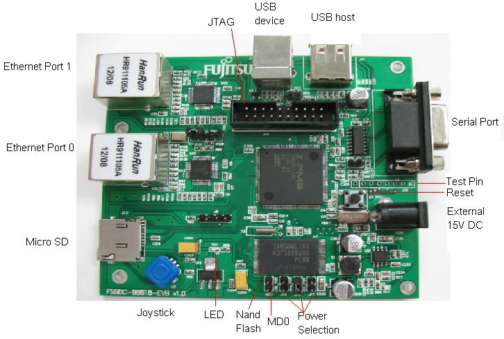

This Webserver runs on an MB9BF618S microcontroller, a member of Fujitsu's FM3 family,
powered by the LwIP (lightweight IP) TCP/IP stack.
Here you see a website which refreshes its data from the microcontroller in background without the need to reload the whole page. You can find a simple website without the need for a JavaScript-capable webbrowser here
Please press the "UP" button or "DOWN" button on the joystick to turn on or turn off the LED.
For more information, updates, code examples and documentation, please visit our website at http://www.fujitsu.com/cn/fss/mcu/32bit/fm3/ .
The picture below is overview of the FSSDC-9B618-EVB evaluation board. 